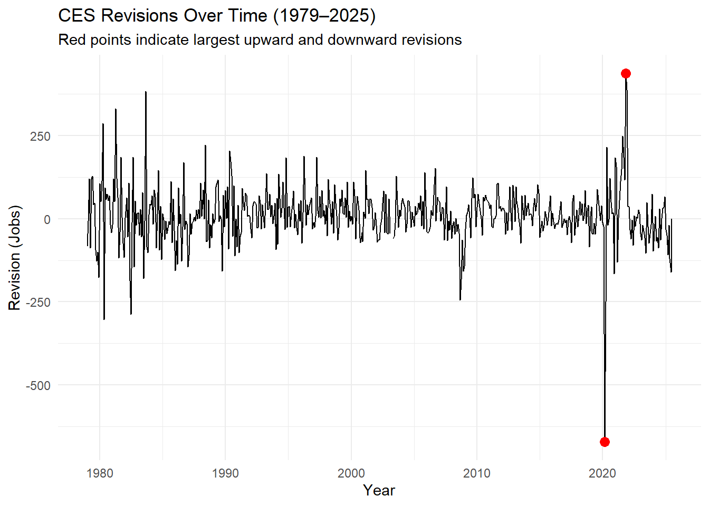
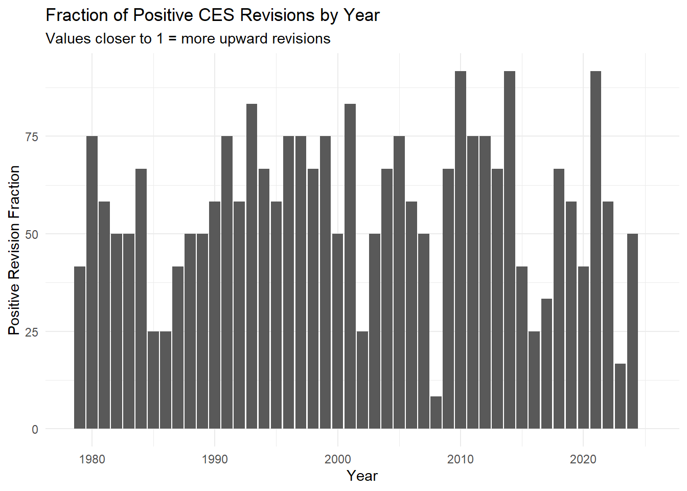
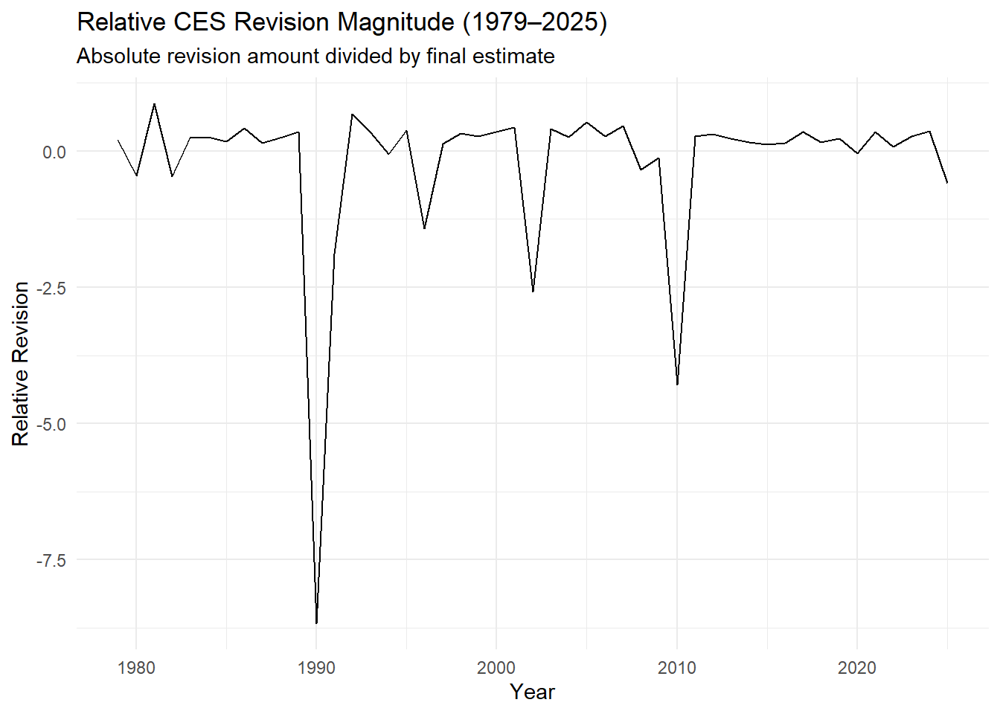

This report analyzes payroll levels from the Current Employment Statistics (CES) survey and their subsequent revisions over the years 1979–2025.
We download the raw payroll levels, extract revision tables for each year, merge them, and then perform:
6 descriptive statistics about CES over the past 45 years
4 ggplot2 visualizations of CES estimates and accuracy over the past 45 years
2 infer-based statistical tests
Fact Check of BLS Revisions
Data Acquisition: Download CES Total Nonfarm Payroll
Show the code
req <-request("https://data.bls.gov/pdq/SurveyOutputServlet") |>req_method("POST") |>req_body_form(request_action ="get_data",reformat ="true",from_results_page ="true",from_year ="1979",to_year ="2025",`Go.x`="38",`Go.y`="16",initial_request ="false",data_tool ="surveymost",series_id ="CES0000000001",years_option ="specific_years" )resp <-req_perform(req)html <- resp |>resp_body_html()# ---- 2. Extract the data table ----tbl <- html |>html_element("table#table0") |>html_table()# ---- 3. Pivot from wide (Jan–Dec columns) to long format ----df <- tbl |>pivot_longer(cols =-Year,names_to ="Month",values_to ="level" )# ---- 4. Clean values and convert to proper types ----payroll_data <- df |>mutate(Month =str_to_title(Month), # "JAN" → "Jan"level =as.numeric(str_replace(level, ",", "")), # convert text to numericdate =ym(paste(Year, Month)) # "1979 Jan" → 1979-01-01 ) |>drop_na(level) |># remove footnote rowsselect(date, level) |>arrange(date)payroll_data
# A tibble: 2 × 6
date level original final revision type
<date> <dbl> <dbl> <dbl> <dbl> <chr>
1 2021-11-01 149206 210 647 437 Largest Positive Revision
2 2020-03-01 150895 -701 -1373 -672 Largest Negative Revision
The largest negative revision of employment was seen in March 1st of 2020, with -672 thousand jobs while the largest positive revision was seen in November 1st of 2021, with 437 thousand jobs.
On average, the revised values changed by 11.2 thousand, with an absolute average shift of 56.7 thousand, representing about a 4.82% revision relative to the original level.
Relative revision magnitude over time (absolute revision / final estimate)
# A tibble: 12 × 3
month avg_revision avg_abs_revision
<ord> <dbl> <dbl>
1 Jan 0.0638 48.2
2 Feb 2.02 43.7
3 Mar -6.20 64.6
4 Apr 22.0 69.4
5 May 17.5 55.5
6 Jun 7.26 53.5
7 Jul 2.28 52.3
8 Aug 32.7 53.8
9 Sep 53.3 80.2
10 Oct -17.7 50.7
11 Nov 29.1 55.1
12 Dec -6.93 54.3
The average revisions by month shows clear seasonal patterns in revision size. For instance, September shows the largest revision of ≈80.2k jobs, followed by April (≈69.4k), and March (≈64.6k) while February (≈43.7k) and January (≈48.2k) show the smallest. It demonstrates larger spring and early-fall revision adjustments.
Summary statistics for CES level and revision, 45-year window
There is a positive mean revision of ~11.24 thousand jobs meaning there is employment growth.
Visualizations
Largest Positive & Negative Revisions Over Time
Show the code
ggplot(payroll_revisions, aes(x = date, y = revision)) +geom_line() +geom_point(data = largest_revisions, aes(x = date, y = revision), color ="red", size =3) +labs(title ="CES Revisions Over Time (1979–2025)",subtitle ="Red points indicate largest upward and downward revisions",x ="Year",y ="Revision (Jobs)" ) +theme_minimal()

Fraction of Positive Revisions by Year
Show the code
ggplot(positive_fraction_year, aes(x = year, y = percent_positive)) +geom_col() +labs(title ="Fraction of Positive CES Revisions by Year",subtitle ="Values closer to 1 = more upward revisions",x ="Year",y ="Positive Revision Fraction" ) +theme_minimal()

Relative Revision Magnitude Over Time
Show the code
ggplot(relative_revision_trend, aes(x = year, y = avg_rel_revision)) +geom_line() +labs(title ="Relative CES Revision Magnitude (1979–2025)",subtitle ="Absolute revision amount divided by final estimate",x ="Year",y ="Relative Revision" ) +theme_minimal()

Average Revision by Month
Show the code
ggplot(revision_by_month, aes(x = month, y = avg_abs_revision)) +geom_col() +labs(title ="Average Absolute CES Revision by Month",subtitle ="Seasonality of revision magnitude",x ="Month",y ="Average Absolute Revision (Jobs)" ) +theme_minimal()